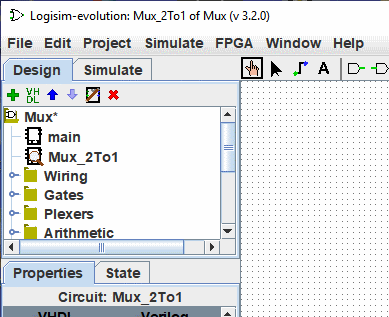
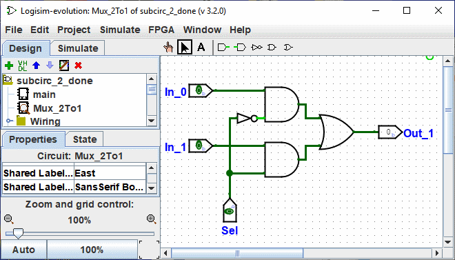

Creating circuits
Every Logisim project is actually a library of circuits. In its simplest form, each project has only one circuit (called main by default), but it is easy to add more: Click on the of the small menu bar above the navigation panel or right click on the root of the tree in the navigation panel or else select | Project |→| Add Circuit... | and then type any name you like for the new circuit you want to create.
Note: The name of the circuits must begin with a letter (A..Z, a..z) it can contain the signs (., _) And numbers.
Suppose we want to build a 2-to-1 multiplexer named Mux_2to1." After adding the circuit, Logisim will look like this.

In the explorer pane, you can now see that the project now contains two circuits, main, and Mux_2to1 Logisim draws a magnifying glass over the icon of the circuit currently being viewed; the current circuit name also appears in the window's title bar.
After editing the circuit to appear like a Mux_2to1, we might end up with the following circuit.

Next: Using subcircuits.